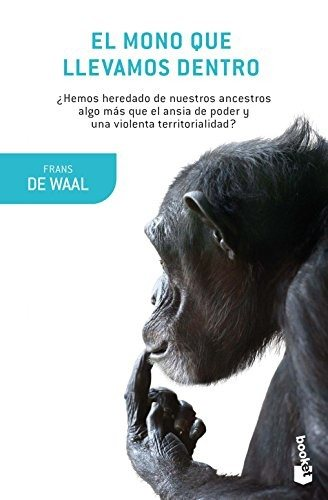

El mono que llevamos dentroFrans de Waal

El mono que llevamos dentro
Frans de Waal
Compara a chimpancés y bonobos para entender la violencia, la empatía y la política humanas.
- Publicado originalmente
- 2005
- Enfoque
- Divulgación científica
- Para quién
- Público general
- Ficha bibliográfica
- Open Library
Este libro tiene derechos de autor, así que no lo alojamos. Te dejamos la ficha para que sepas de qué trata y lo busques en una librería o biblioteca.
Psicobiología y bases biológicas de la conductaPsicología evolucionistaMoral y conducta éticaAltruismo y cooperación